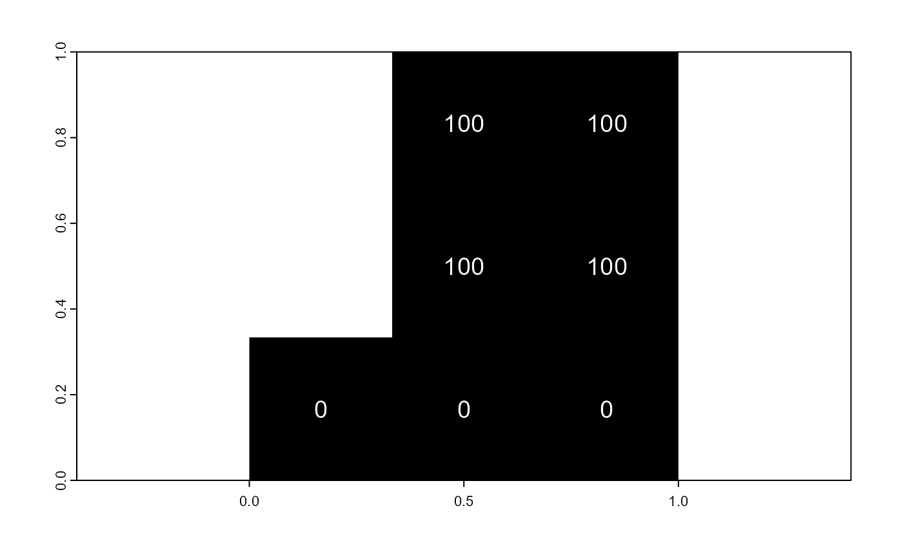

vignettes/articles/ghp/scapesClassification_01_1_FormatInputs.Rmd
scapesClassification_01_1_FormatInputs.RmdSingle and multi-layer rasters are central to (scapes)Classifications. They define the area over which classifications are performed and provide the spatial data users deem important to build their classification rules. In addition, rasters provide information about where individual cells are located and how they relate with each other. As we will see in the next sections, raster cells are the basic unit of (scapes)Classifications.
Raster provided to
scapesClassificationsfunctions should be of the classSpatRasterfrom the package terra.
Raster cells are numbered from the upper left cell to the upper right cell and then continuing on the left side of the next row, and so on until the last cell at the lower-right side of the raster (RSpatial). This numbering is used by the functions attTbl() and ngbList() to compute the attribute table and the neighborhood list.
Making use of cell numbers, the function attTbl() converts a single or a multi-layer raster into an attribute table (data.frame). Attribute tables come with a column named Cell. This column stores raster cell numbers and associates each row of the attribute table to a cell of the raster. The remaining columns of the attribute table store the data contained in the raster layers.
Note that only raster cells having no missing values in no layer (i.e., complete cases) are included in the attribute table.
As an example we can consider a 3X3 raster and some dummy data (Figure 1).
# 3X3 RASTER
library(terra)
r <- rast(matrix(c(NA,100,100,NA,100,100,0,0,0),nrow = 3,ncol = 3,byrow = TRUE), extent=c(0,1,0,1))We can compute the attribute table with the following code chunk.
# ATTRIBUTE TABLE
library(scapesClassification)
at <- attTbl(r, var_names = c("dummy_var"))
at
## Cell dummy_var
## 1 2 100
## 2 3 100
## 3 5 100
## 4 6 100
## 5 7 0
## 6 8 0
## 7 9 0Note that raster cells 1 and 4 have missing values, therefore, they are not included in the attribute table. Note also that when missing values are present in the raster object, the direct correspondence between cell numbers and attribute table row indices is lost (e.g., cell 1 is not included in the table and cell 2 is in the 1st row of the table).
Any column of the attribute table can be indexed back into the original raster object using the Cell column or the function cv.2.rast().
# Table variable to raster
r2 <- cv.2.rast(r, at$dummy_var, at$Cell)
# Equivalent to
r3 <- r ; r3[] <- NA
r3[at$Cell] <- at$dummy_var
# r, r2 and r3 are equivalent
all.equal(values(r), values(r2), values(r3))
## [1] TRUE
# PLOT r2
plot(r2, type="classes", legend = FALSE, col="black")
text(r, cex=1.2, col="white")
The values and classes existing in the neighborhood of a raster cell can be used to define classification rules. The function ngbList() speeds up the evaluation of classification rules by computing and storing in memory as a list raster cells’ neighborhoods.
The function ngbList() is coded based on the following points:
- The neighborhood of a raster cell with coordinates
(x, y)counts 8 neighbors with coordinates(x±1, y),(x, y±1)and(x±1, y±1). Note that edge cells have less than 8 neighbors;
- Neighborhoods of cells presenting one or more missing values are not computed (e.g., cells 1 and 4 of Figure 1);
- With the argument
rNumb = FALSE, the neighbors are identified by cell numbers (e.g., neighbors of cell 2 of Figure 1 are cells1, 3, 4, 5, 6);
- With the argument
rNumb = TRUE, the neighbors are identified by row numbers and neighbors with missing values are omitted (e.g., neighbors of cell 2 of Figure 1 are in the row indices2, 3, 4which correspond to cells3, 5, 6);
As an example let’s consider the raster r plotted in Figure 1.
# ATTRIBUTE TABLE
at <- attTbl(r, var_names = c("dummy_var"))
# NEIGHBORHOODS - CELL NUMBERS
nbs_CELL <- ngbList(r, rNumb = FALSE)
# NEIGHBORHOODS - ROW NUMBERS
nbs_ROW <- ngbList(r, rNumb = TRUE, attTbl = at)
#NEIGHBORHOODS - CELL NUMBER
# Cells 1 and 4 are omitted because they are NAs ->
# The top three elements of the list are cells 2, 3 and 5
head(nbs_CELL, 3)
## $`2`
## [1] 1 3 4 5 6
##
## $`3`
## [1] 2 5 6
##
## $`5`
## [1] 1 2 3 4 6 7 8 9
#NEIGHBORHOODS - ROW NUMBER
# Cells 1 and 4 are omitted because they are NAs ->
# The top three elements of the list are in rows 1, 2 and 3
head(nbs_ROW, 3)
## $`1`
## [1] 2 3 4
##
## $`2`
## [1] 1 3 4
##
## $`3`
## [1] 1 2 4 5 6 7
# Rows 1, 2 and 3 correspond to cells 2, 3 and 5
at$Cell[1:3]
## [1] 2 3 5
# LET'S CONSIDER THE NEIGHBORHOOD OF CELL #2
# Cell #2 corresponds to the 1st element of both 'nbs_CELL' and 'nbs_ROW'
# These are cell numbers
nbs_CELL[1]
## $`2`
## [1] 1 3 4 5 6
# These are row numbers
nbs_ROW[1]
## $`1`
## [1] 2 3 4
# Row numbers can be converted into cell numbers
at$Cell[ nbs_ROW[[1]] ]
## [1] 3 5 6
# Cells 1 and 4 are omitted from the neighborhood ('nbs_ROW') of cell #2
# because they have missing values
r[c(1,4)]
## lyr.1
## 1 NA
## 2 NAThe list of neighborhoods is computed and stored in memory to improve the performance of the classification algorithms. The performance increase is greater when neighbors are identified by row numbers rather than by cell numbers.